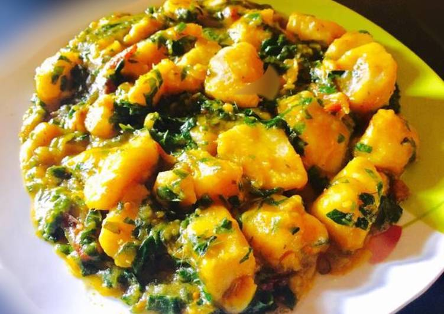

Jollof Rice

Description
If you're a novice Nigerian trying to make it in this Naija life, you need to have a staple Nigerian dish to present.
You want your guests to eat sleep and repeat.
Look no further. YAM POTTAGE is here :)
It is classic. It is hearty. It is simple.
Feast on...
credit to https://www.thepretendchef.com/yam-porridge/
Ingredients
- Meat, dry fish, stockfish, smoked fish, cow leg, bone marrow or tripe etc. (optional)
- 730g yam
- 3 cups water + stock
- 3/4 cup chopped onions, (110g)
- 2 seasoning cubes
- salt
- 1 scotch bonnet (fresh pepper)
- 2 1/2 tablespoons ground crayfish
- 4g ogili okpei (even I don't know what this is)
- 6 tablespoons palm oil
- Cut and peel yam, cut into cubes and rinse in a bowl of water.
- Place yam in a pot, add water and stock, enough to just cover the yam.
- Add meat or dry fish, onions, seasoning cubes, salt and pepper. (Not too much salt)
- Place over medium-high heat. Add crayfish, ground
- Add crayfish, ground ogili okpei and palm oil. Stir and cover.
- Cook till yam is very soft.
- The slurry will be light and watery at this stage.
- Use a wooden spoon, if one is available, and stir your yam porridge continuously.
- Take out 1 or 2 pieces of yam, mash them and stir it into the pot.
- Reduce the heat and cook for a short while, taste and take off the heat.
Homepage